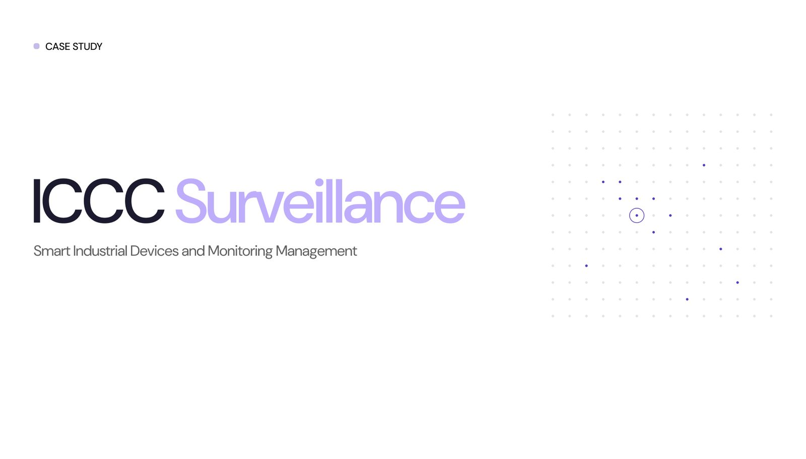
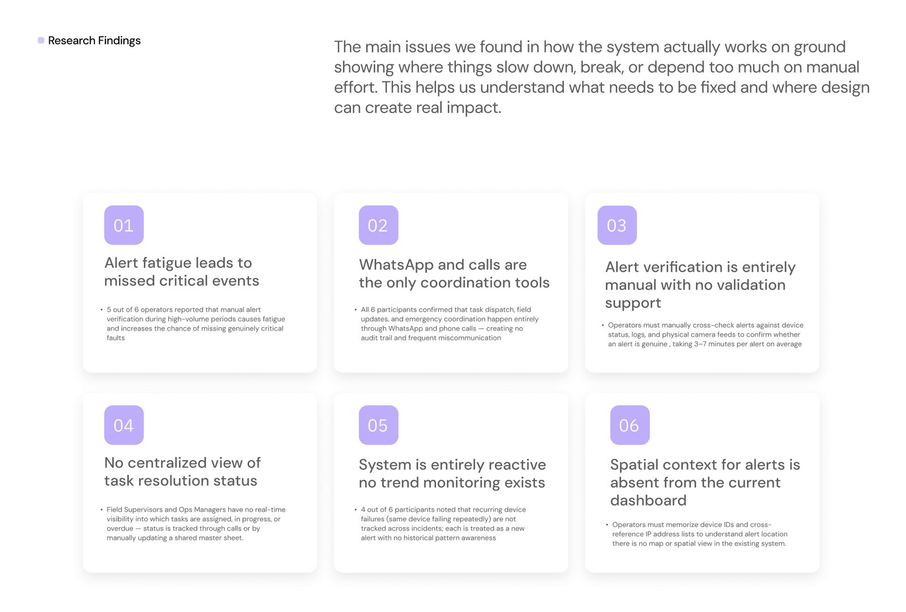
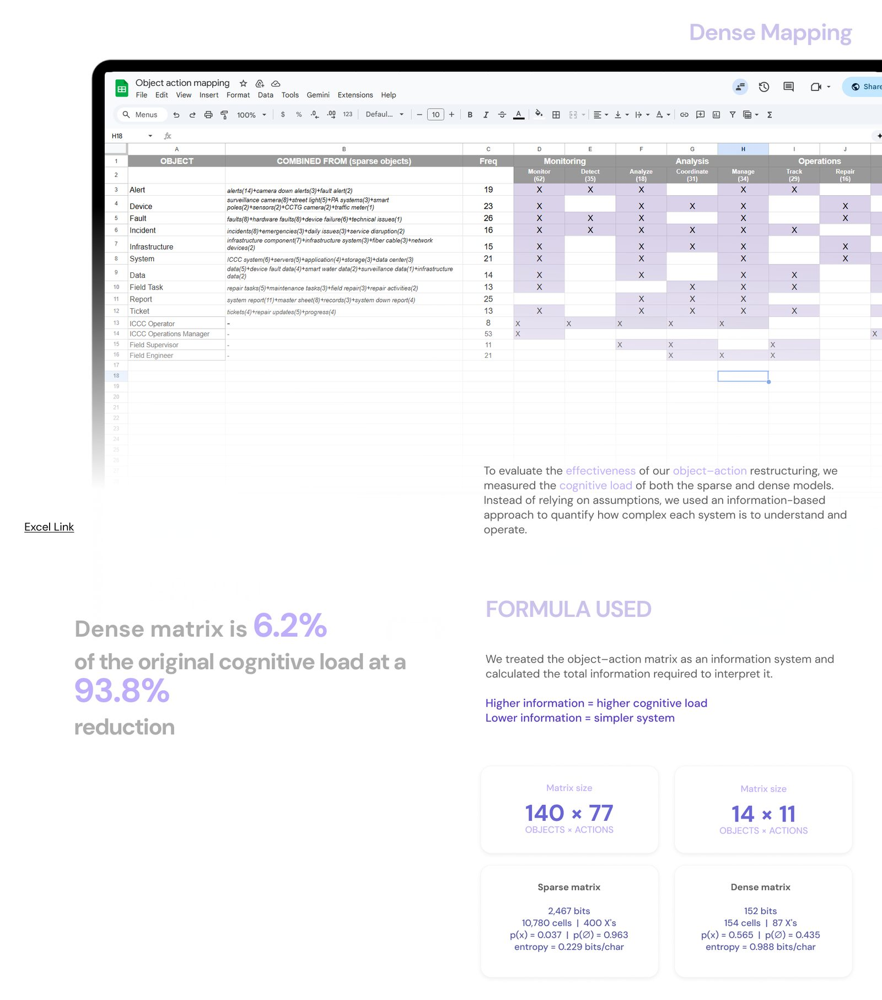
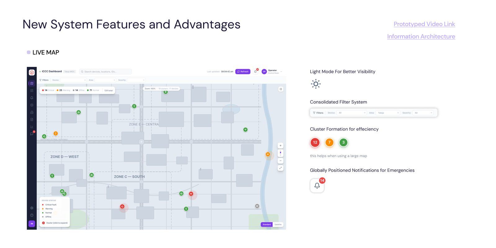
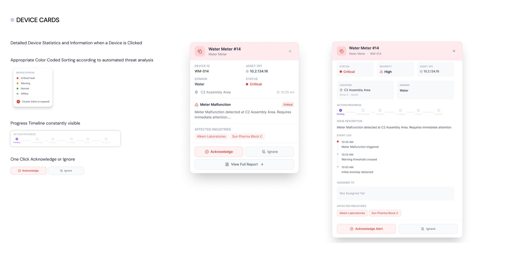
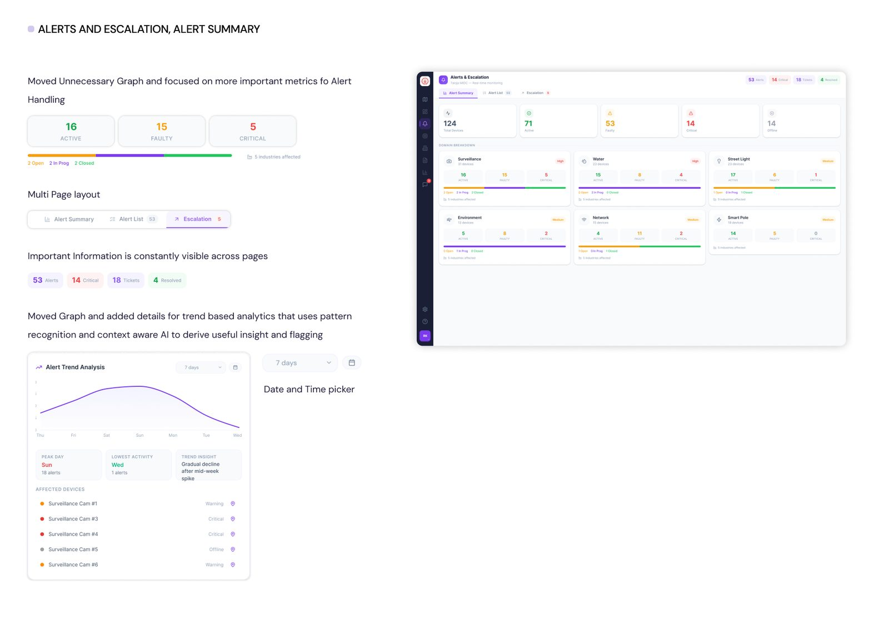

A redesign of the command centre dashboard that monitors Taloja MIDC, rebuilt around how alerts are actually verified, escalated and resolved.

The ICCC watches 310 cameras, 349 street lights and over 1,000 smart poles across 950+ industries. In the command centre we watched operators verify every alert by hand, memorise device IDs, and dispatch field teams over WhatsApp and phone calls with no record of what happened next.
Field observation and interviews with six operators at the ICCC in Navi Mumbai, down to what slows a response.

We grouped a sparse object-action map into a dense one and measured it: the new model carries 6.2% of the original information load.

Operators no longer cross-reference IP lists. Every alert has a place on the map, and critical ones stay visible.

Status, severity, event log and affected industries in one card, with acknowledge or ignore right there.

Active, faulty and critical counts stay on screen across tabs, with trend analysis to catch devices that keep failing.

The full case study is on its way to Behance. The rest of the work is already there.